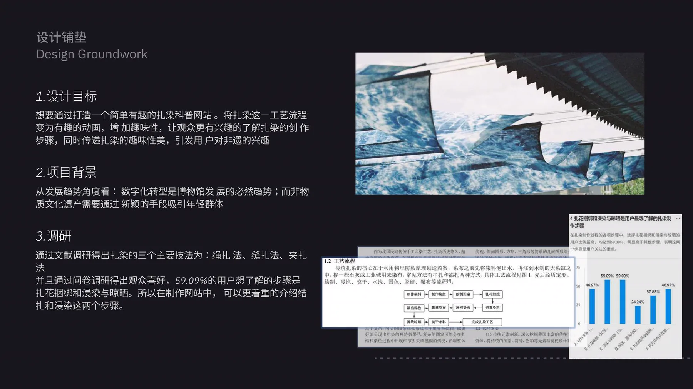
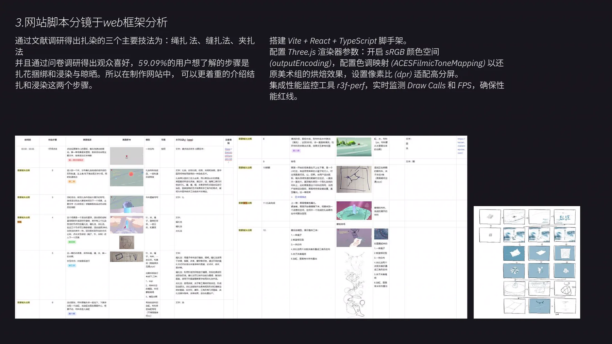
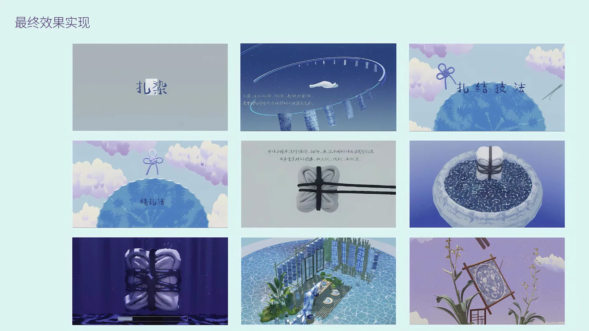
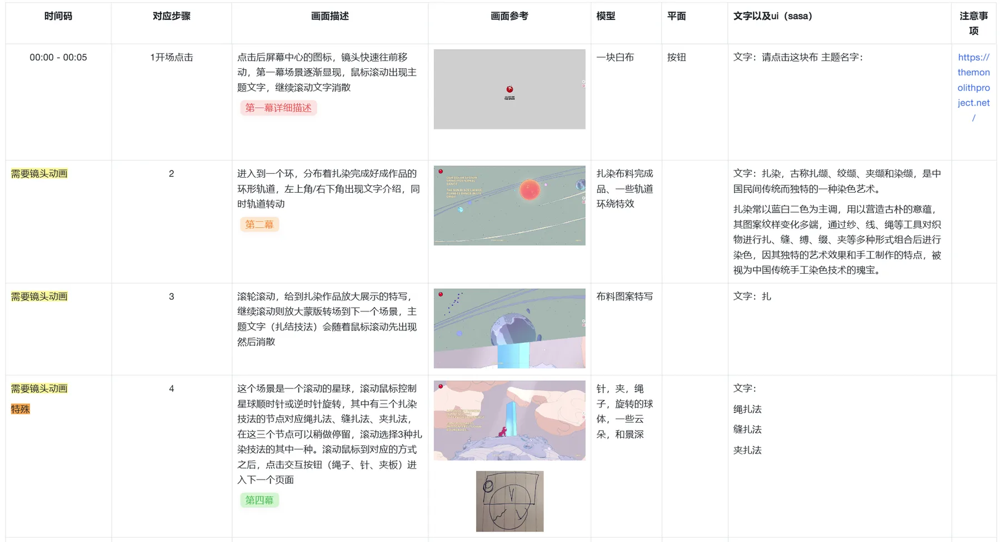
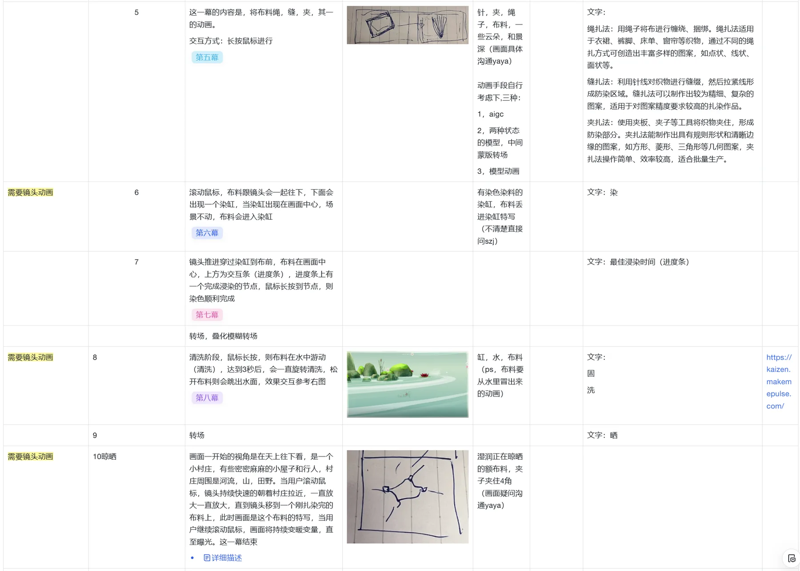
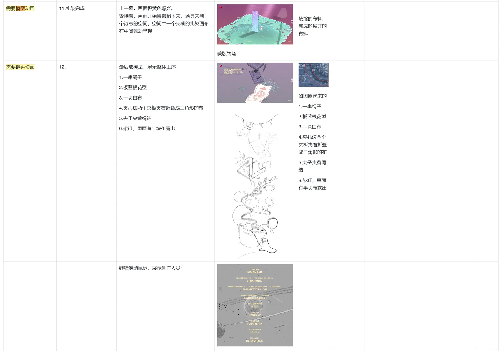
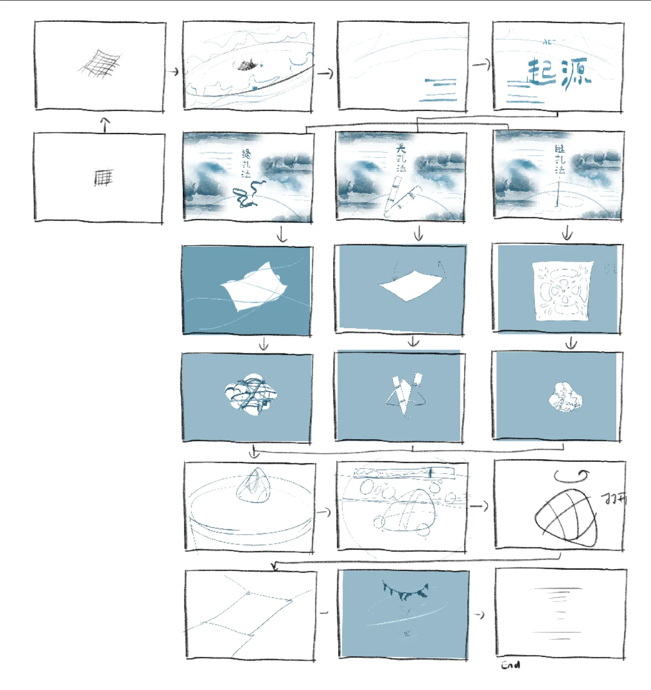
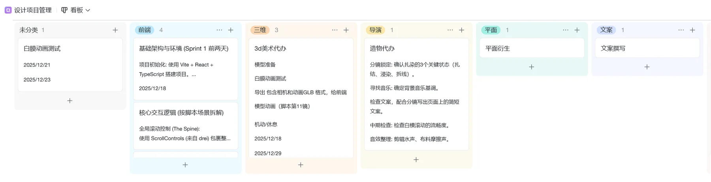

Tie-Dye: A Web3D Story
An immersive site about traditional tie-dye.
 Watch video
Watch video
Tie-Dye: Website Demo
Original video/BilibiliOriginal production notes · Chinese
Production notes
一、作品简介&呈现《数字蓝染：Web3D非遗互动空间》
作品展示视频
B 站视频把云南非遗做成3D网页，我给博物馆建了个线上染坊《触及蓝色：云南扎染数字全流程体验》_哔哩哔哩_bilibilibilibili.com ↗


二、项目解析与总结
本项目采用现代 Web3D 管线，以 React Three Fiber 为核心三维引擎，在浏览器端构建高精度交互空间。
三维资产依托 Blender 完成拓扑重构与光影烘焙，输出轻量化 GLB 格式，严格控制端侧的性能开销。交互层面，引入 GSAP 物理动效库，将用户的页面滚动行为直接绑定至相机运动轨迹，完成电影级视听叙事。
针对核心的“浸染”工艺，项目摒弃了传统的预渲染视频贴图，转而自主编写底层 GLSL 着色器。利用数学噪声算法实时解算材质的顶点与片元数据，程序化生成染料在布料纤维间扩散的物理毛细现象。这种兼顾美术表现与性能的底层渲染策略，在确保多端流畅运行的同时，赋予了受众最真实的实时物理交互反馈。
1. 将物理工艺转译为交互手势
传统的非遗科普往往陷入“我播你看”的单向图文灌输。为了打破屏幕的隔阂，我拆解了扎染工艺的核心物理动作，并将其严丝合缝地映射到前端的交互行为中。
例如，用户的“长按”动作不是一个单纯的 UI 触发，而是被赋予了物理重量——它模拟了将布料按压在染缸中的“浸染”时间。用户按住鼠标的时间越长，底层的逻辑就会驱动色彩在 3D 布料上晕染得越深。交互行为本身，在这里成为了最直接的叙事语言。
2. 视听节奏与情绪曲线的控制
整个网页的流转，是一条被精心设计过的情绪曲线。
我把页面的“全局滚动进度”作为贯穿始终的时间轴，去直接驱动相机的运动轨迹。从开场时大面积白布的视觉留白，到镜头推进观察细微针脚的微观特写，再到最终布料氧化变蓝、在风中铺展的宏大全景。配合水声与环境音效的动态切入，每一次景别的切换都在积蓄期待，最终在布料完全展开的瞬间，完成视觉与情绪的释放。
3·总结
本项目最初的编导意图，是解决博物馆传统非遗展陈中“见物不见人、重结果轻过程”的痛点。
回顾最终产出，项目成功构建了一个闭环的线上体验场。通过将鼠标长按、拖拽等物理行为与蓝染的化学反应进程（如 Shader 控制的晕染扩散）相绑定，我们验证了这一核心假设：
高频的微交互能够有效降低受众对复杂工艺的认知门槛，并建立起有效的情感连接。
这是交互叙事在数字遗产活化中的一次成功实践。
三、brief大纲（项目管理）
脚本
网页脚本（点击可跳转至详细页）



手绘分镜

进程与任务看板

前端
A. 基础架构与环境 (Sprint 1 前两天)
- 项目初始化: 使用
Vite+React+TypeScript搭建项目。 - 安装核心库:
three(3D 引擎)@react-three/fiber(React 桥接)@react-three/drei(实用工具集，必装！)gsap(处理复杂的非线性动画)zustand(状态管理，用于跨组件通信，比如“长按”改变“当前场景状态”)
- 调试工具: 在 VS Code 中配置
Debugger for Chrome，并在 R3F Canvas 中开启<Perf />(来自r3f-perf) 监控性能。
B. 核心交互逻辑 (按脚本场景拆解)
- 全局滚动控制 (The Spine):
- 使用
ScrollControls(来自 drei) 包裹整个场景。 - 任务: 实时获取滚动偏移量
scroll.offset(0 到 1)，并将其广播给所有子组件。
- 使用
- Scene 1 (开场) ():
- UI: 制作“点击中心图标”的 HTML 按钮，点击后触发
gsap.to(camera.position, ...)推进镜头。 - 文字: 监听滚动值，当 scroll > 0.05 时，让标题文字 opacity 变为 1。
- UI: 制作“点击中心图标”的 HTML 按钮，点击后触发
- Scene 4 (星球选择) ():
- 交互: 实现星球的拖拽旋转 (可以使用
PresentationControls)。 - Raycasting: 给星球上的三个节点（绳、针、夹）添加
onClick事件。点击后，锁定滚动条 (document.body.style.overflow = 'hidden') 并跳转路由或切换组件状态。
- 交互: 实现星球的拖拽旋转 (可以使用
- Scene 7 & 8 (长按机制) ():
- 难点逻辑: 编写一个自定义 Hook
useLongPress。 - 逻辑: 监听
pointerdown开始计时 ->useFrame中增加进度变量 -> 进度条 UI 更新 -> 若中途pointerup则回弹清零 -> 满值则触发onComplete回调。
- 难点逻辑: 编写一个自定义 Hook
C. 音效与性能
- 音频: 使用
howler.js管理背景乐和交互音效（点击声、入水声）。 - 加载: 实现
Suspense和加载页面 (Loading Screen)，处理useGLTF的异步加载。
三维
大纲
模型准备
白膜动画测试
导出 包含相机和动画GLB 格式，给前端模型动画(脚本第11镜)
美术 A (布料):
- S1-S3: 白布、成品扎染布（高模+法线烘焙）。
- S5: 三种扎法（绳扎、缝扎、夹扎）的变形动画（关键！这是核心展示）。建议使用 Shape Keys (形态键) 制作从“平铺”到“扎紧”的过程。
- S6/S8: 布料入水、水中游动、出水的动画。
- S11: 最终成品的唯美飘动。
美术 B (场景):
- S2: 扎染作品环形轨道模型。
- S4: 星球模型 + 云朵/山体装饰（Low Poly 风格）。
- S6/S7: 染缸模型 + 内部浑浊液体（需要配合 TA 做 Shader）。
- S10: 村庄场景。警告：不要做高模！用极简 Low Poly 风格或者“纸片立绘”风格，否则网页会卡死。
- S12: 道具合集（绳子、板蓝根、夹子等）。
CREATOR
分镜锁定:
确认扎染的3个关键状态(扎结、浸染、拆线)
寻找音乐:
确定背景音乐基调。
检查文案，
配合分镜写出页面上的简短文案。
中期检查:
检查白模滚动的流畅度
音效整理:
剪辑水声、布料摩擦声,
TA技术美术
S6/S7
液体 Shader: 制作染缸里的水面，需要有波纹和浑浊感。
S10 曝光特效:
编写 Post-processing Shader，让画面根据滚动进度，Brightness/Contrast 逐渐爆表变成全白。
扎染纹理生成:
协助美术 A，确保布料上的蓝色晕染看起来自然（边缘要有像水墨一样的渗透感）。
性能优化:
监控 S10 村庄和 S4 星球的面数。